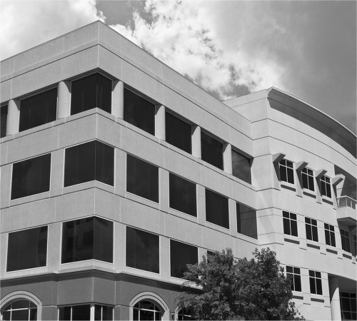

<!DOCTYPE html PUBLIC "-//W3C//DTD XHTML 1.1//EN" "http://www.w3.org/TR/xhtml11/DTD/xhtml11.dtd">
<html xmlns="http://www.w3.org/1999/xhtml" xml:lang="en">

<head>
  <title>Bangka_Belitung/title>
  <meta name="description" content="free website template" />
  <meta name="keywords" content="enter your keywords here" />
  <meta http-equiv="content-type" content="text/html; charset=utf-8" />
  <meta http-equiv="X-UA-Compatible" content="IE=9" />
  <link rel="stylesheet" type="text/css" href="css/style.css" />
  <link href="css/portfolio.css" rel="stylesheet" type="text/css" />
  <link href="css/dark.css" rel="stylesheet" type="text/css" />
</head>

<body>
  <div id="main">
    <div id="header">
      <div id="welcome">
      <h1><span>YOUR</span> PANTAI_BELITUNG</h1>
    </div><!--end welcome-->
      <div id="menubar">
        <ul id="menu">
          <li class="current"><a href="index.html">Home</a></li>
          <li><a href="ourwork.html">Tanjung</a></li>
          <li><a href="testimonials.html">Penyambungan</a></li>
          <li><a href="projects.html">Batu</a></li>
          <li><a href="contact.html">Contact Us</a></li>
        </ul>
      </div><!--end menubar-->
    </div><!--end header-->
    
	<div id="site_content">

      <div id="text_content">   
        <h2>Pantai Penyambungan</h2>
	    <p>Pantai adalah sebuah bentuk geografis yang terdiri dari pasir, dan terdapat di daerah pesisir laut. Daerah pantai menjadi batas antara daratan dan perairan laut. Panjang garis pantai ini diukur mengeliling seluruh pantai yang merupakan daerah teritorial suatu negara.

Menurut koreksi PBB tahun 2008, Indonesia merupakan negara berpantai terpanjang keempat di dunia setelah Amerika Serikat (AS), Kanada dan Rusia. Panjang garis pantai Indonesia tercatat sebesar 95.181 km.
Garis pantai
Suasana garis pantai di Tanjung Benoa, Bali.

Garis pantai adalah batas pertemuan antara bagian laut dan daratan pada saat terjadi air laut pasang tertinggi. Garis laut dapat berubah karena adanya abrasi, yaitu pengikisan pantai oleh hantaman gelombang laut yang menyebabkan berkurangnya areal daratan.

Ada beberapa langkah penting yang bisa dilakukan dalam mengamankan garis pantai seperti pemecah gelombang dan pengembangan vegetasi di pantai.</p>
      </div><!--close text_content-->	
	
      <div class="static_image">
	    
	  </div>
    
	</div><!--end site_content-->
  </div><!--end main-->
  
  <div id="footer">
    <div id="footer_container">
    <div class="footer_container_box">
    <h4>Pantai Tanjung Tinngi</h4>
      <p>JIka ingin melanjurkan Membaca, BIsa klik dibawah ini</p>
      <a href="https://id.wikipedia.org/wiki/Pantai_Tanjung_Tinggi">Read more</a>
    </div><!--close footer_container_box-->
      <div class="footer_container_box">
       <h4>Pantai PEnyambungan</h4>
      <p> JIka ingin melanjurkan Membaca, BIsa klik dibawah ini</p>
      <a href="https://id.wikipedia.org/wiki/Pantai">Read more</a>
    </div><!--close footer_container_box-->
      <div class="footer_container_boxl">
    <h4>Pantai Batu KOdok</h4>
      <p> JIka ingin melanjurkan Membaca, BIsa klik dibawah ini</p>
      <a href="https://id.wikipedia.org/wiki/Wisata_Bahari_Lamongan">Read more</a>  
    </div><!--close footer_container_box1-->      
    <br style="clear:both"/>
    <br />
    <a href="https://www.google.co.id/search?biw=1525&bih=720&tbm=isch&sa=1&q=pantai+pulau+bangka&oq=pantai+pulau+bangka&gs_l=psy-ab.3..0j0i8i30k1l2j0i24k1.3574.12072.0.12704.26.23.2.0.0.0.316.4037.0j10j3j5.18.0....0...1.1.64.psy-ab..6.19.3939.0..0i67k1j0i10k1j0i10i24k1.NjGCXmu1__I">Images</a> | Bangka Belitung    <a https://www.facebook.com/bocah.lalang.9">NOfan_Maulana</a>
    </div><!--close footer_container--> 
  </div><!--close footer-->   
  
</body>
</html>
